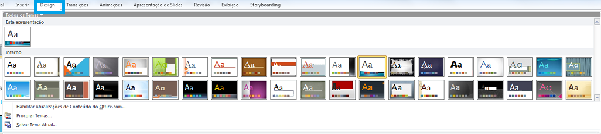

Os slides correspondem às páginas de uma apresentação.
Quanto mais slides, maior a sua apresentação.
Abra seu Power Point, insira quantos slides quiser, veja como a coisa funciona.
Na imagem abaixo, percebe-se uma área destinada a 'Design' do Slide, ou seja, você adiciona um 'Tema' à sua Apresentação.
Abra seu Power Point, acione os temas, veja como estilizar seus slides livremente!!
Além de adicionar um tema aos slides, percorrendo a apresentação inteira, você pode estilizar os textos presentes nos slides, da mesma forma que vimos no Word.
Estilização que varia de negrito/itálico/sublinhado, cor da fonte, tamanho da fonte, até o infinito!!